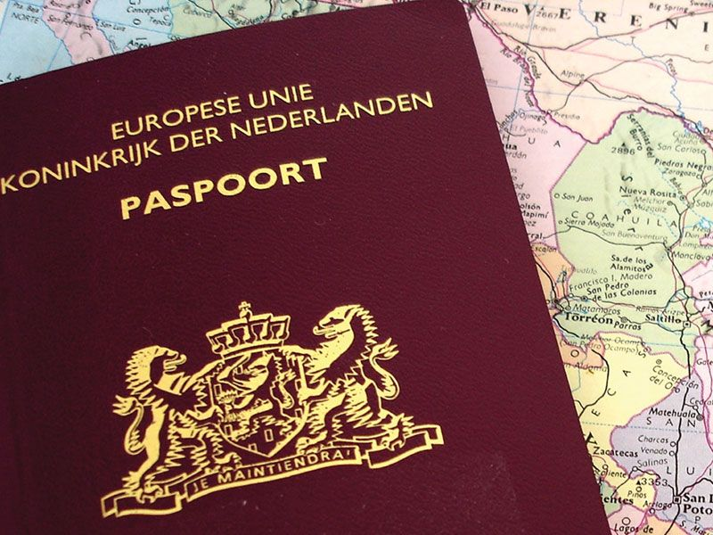

Geen visum voor de meeste bezoekers
Vroeger werd soms verteld dat je voor Bodrum een visum nodig had. Dat klopte niet. Voor een dagtrip (of langer verblijf tot 90 dagen) heb je geen visum nodig als je uit de EU/Schengen, UK (British Citizen) of Ierland komt.
Sommige verkopers gebruikten het “visum-verhaal” om de prijs op te drijven. Check altijd zelf op de officiële site.
↗ Officiële e-Visa check: evisa.gov.tr